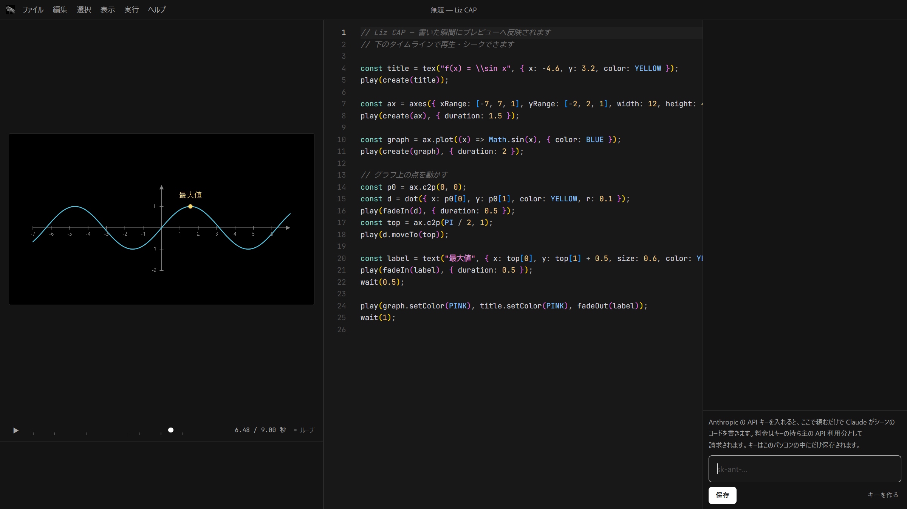

01 — Live preview
書いたらすぐ映る
保存も実行ボタンもいりません。1 文字変えるたびにシーンを作り直し、プレビューとタイムラインがそのまま追いつきます。シークや再生ではコードを動かし直さないので、長い動画でも軽いままです。
- Rebuild
- 約 0.01 s
- Renderer
- WebGPU
- Seek
- コードを再実行しない
Fig. 01 / Lorenz attractor / σ 10 · ρ 28 · β 8⁄3
Scene / hero.liz.ts / 43 lines
(01) Code / Animate / Preview
Liz CAP は、数学・科学の解説アニメーションを作るエディタです。TypeScript でシーンを書くと、横のプレビューにすぐ映ります。図形をドラッグすればコードの数値が書き換わり、AI に頼めばコードごと直してくれます。
Fig. 02 / Manifesto / ゆっくり読む
数式は、動いて初めて分かることがある。だから、図を作るのはコードを書くのと同じ速さであるべきだ。書けばすぐ映り、つかめばコードが変わり、頼めば直る。Liz CAP は、説明したい人のための道具です。
書く・つかむ・頼む・書き出す。どこから触っても、コードとプレビューが同じ状態に戻ります。右の映像はどれも、Liz CAP で作ってそのまま書き出したものです。
01 — Live preview
保存も実行ボタンもいりません。1 文字変えるたびにシーンを作り直し、プレビューとタイムラインがそのまま追いつきます。シークや再生ではコードを動かし直さないので、長い動画でも軽いままです。
02 — Direct manipulation
プレビューの円や点をドラッグすると、位置を決めている x や moveTo([3, 2]) の数字が書き換わります。3D ではカメラの角度も。手で合わせて、コードで残せます。
03 — AI pair
右の AI チャットに「cos のグラフも足して」と頼むと、コードを書き換えます。変わった所は緑と赤で見え、「採用」か「却下」で決められます。Claude Code などの AI からも MCP でつなげます。
04 — Export
グラフ・数式（LaTeX 記法）・文字・表・ベクトル場・3D の立体を、1080p 60fps や 4K で MP4 にします。GIF や PNG の連番（背景を透明にもできます）にも書き出せ、音声と字幕も付けられます。

GPU で描き、シークや再生ではコードを動かし直しません。直した結果が、ほぼ待たずに見えます。下の線は、Manim の時間を 100 とした長さです。
2026 年 11 月、Core i7-14700F / GeForce RTX 4080 SUPER で計測。Manim Community v0.22.1（低画質 -ql で作り直し）。文字・座標軸・sin のグラフ・円 30 個のシーン。
無料版でも、エディタ・ドラッグ・AI チャット・MCP はすべて使えます。長い動画を透かしなしで出したくなったら有料版へ。
購入するとライセンスキーがメールで届きます。アプリの「ヘルプ → ライセンス…」に入れると有料版になります。お支払いは Lemon Squeezy が扱います。AI チャットはご自身の Anthropic の API キーで動き、その料金は Anthropic へのお支払いになります。
ほかに分からないことがあれば、お問い合わせください。
Windows 10 / 11（64 ビット）で、WebGPU が使える GPU が必要です。ここ数年のパソコンなら、内蔵 GPU でもたいてい動きます。
まだコード署名をしていないためです。「詳細情報」を押してから「実行」を押すと入れられます。管理者の許可は要りません。
そのままは動きません。書き方は TypeScript ですが、座標（画面の高さ 8、原点は中央）や play・wait・create の考え方は Manim と同じなので、読み替えはかんたんです。AI に「この Manim のコードを Liz CAP に直して」と頼むこともできます。
Manim（Community 版と 3Blue1Brown 版）の主な機能 230 項目のうち、229 項目に当たるものを入れています。図形・数式・グラフ・3D・形の変形・空間ごとの変形・値に付いてくる図形（ValueTracker）・目立たせる動き・2D のカメラ・ベクトル場・図形どうしの和や差・効果音・場面ごとの書き出し・画像を貼った曲面などです。まだないのは、3Blue1Brown の π のような話し手のキャラクターだけです。
コードと API キーはお使いのパソコンの中にだけ保存します。AI チャットを使ったときだけ、コードと会話がご自身のキーで Anthropic に直接送られます。くわしくはプライバシーポリシーをご覧ください。
アプリが起動時に新しい版を確かめ、あればタイトルバーでお知らせします。「ヘルプ」から選ぶと、ダウンロードして入れ直します。
購入時のメールにある Lemon Squeezy の注文ページから、いつでも解約できます。解約しても、お支払い済みの期間の終わりまでは有料版のまま使えます。